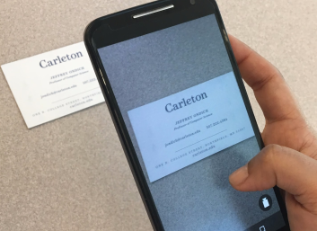

Overview
1.0 Project Description
Our project consists of two things:
Crystal AR (library)
Demo application
Github repositories:
1.1 Library
We wrote a library that analyzes still image and live feed input from a mobile device’s camera and allows the developers to integrate the following features into mobile applications easily:
Clickable url, emails and phone numbers
The camera recognizes text structured as a urls, emails and phone numbers allowing the developer to interact with them.
Replace text with images (keeping all else constant)
Finds and replaces text with images for a given set of string: image mappings.
Finds the corners of a table/quadrilateral and renders objects on top.
A developer can create an app that allows corner detection in live camera mode (or still images) and augment objects to this real live camera feed.
Text:
The optical character recognition (ocr) is done using Google’s Tesseract OCR library. Regular expressions are used to find urls, phone numbers and emails.
Corners:
Corner detection is done with an ad hoc algorithm where we track the amount of time points along the edge of the table is the extrema values along a set of x-y axis. The axis are rotated 360 degrees in this process to account for the fact that the tables that we are finding the corners of are not necessarily always at the same angle to the camera. Points along the edge that are the extrema values for the longest amount of time are what we will consider to be the corners of the table.
Objects:
Objects are rendered using 3rd party libraries embedded in our library. These include Rajawali .OBJ objects. We design the library such that it allows the developer to transform the objects in relation to transformations happening in the live camera feed.
1.2 Demo application
We made a demo application to highlight the various features of Crystal AR. The demo application is split into three activities (text, corner, model) in order to explicitly show off the three main things that our library accomplishes and can be used for.
Recognize Text
Detect Corners